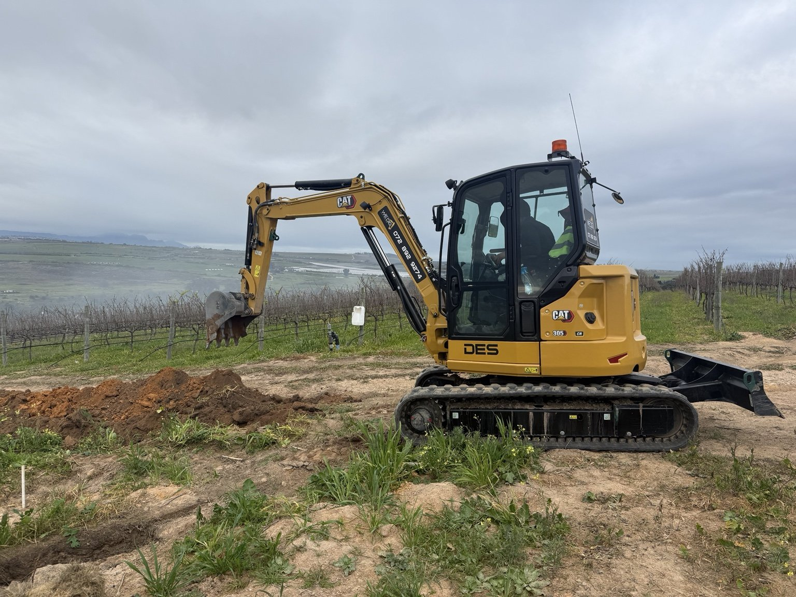

Agricultural Earthworks
Excavation support for farms, vineyards, orchards, drainage and irrigation-related projects.
Reliable 5-ton excavator hire with an operator for agricultural, civil and construction projects across the Western Cape.
From farms and vineyards to construction sites, WeDig supports projects that need precise and practical excavation work.
Excavation support for farms, vineyards, orchards, drainage and irrigation-related projects.
Trenching and excavation support for utilities, pipelines, services and civil contractors.
Excavation and groundwork for building projects, landscaping and general site preparation.
Our 5-ton excavator is suited to a wide range of excavation and earthmoving tasks where manoeuvrability and capability matter.
Take a closer look at our CAT excavator working in the Stellenbosch area.


WeDig Earthworks (Pty) Ltd provides excavator hire and earthworks support to agricultural businesses, civil contractors and construction clients in the Western Cape. Tell us about your project, and we’ll discuss the right way to assist.
Share your location, type of work and expected dates.
We’ll discuss the scope and provide pricing based on your requirements.
Arrange the excavator and operator for your project.
Send us your project details for a quote. The quickest way to reach us is on WhatsApp.
Phone / WhatsApp:
072 892 9274
Service area:
Western Cape, South Africa
Fill in the details below to open a pre-written WhatsApp enquiry.